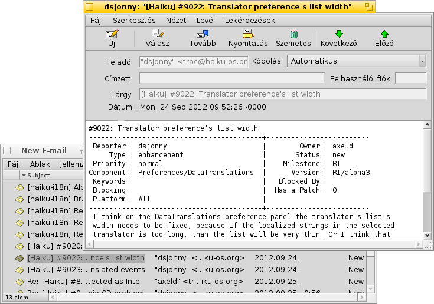
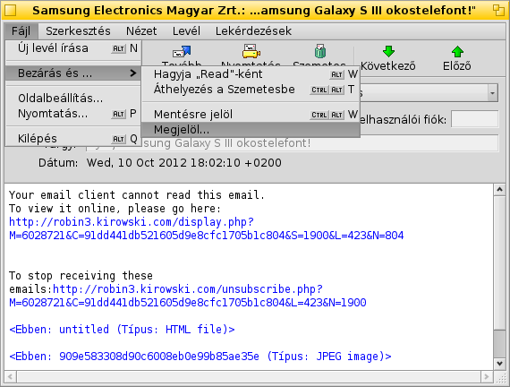
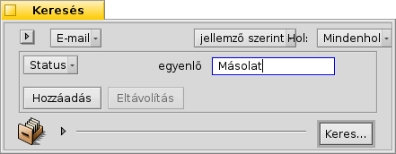

Magyar
Magyar Català
Català Deutsch
Deutsch English
English Español
Español Français
Français Italiano
Italiano Polski
Polski Português
Português Português (Brazil)
Português (Brazil) Română
Română Slovenčina
Slovenčina Suomi
Suomi Svenska
Svenska 中文 ［中文］
中文 ［中文］ Русский
Русский Українська
Українська 日本語
日本語| Index |
|
A Haiku levelező rendszere Egyéni állapotok használata Lekérdezések használata További tippek |
Műhely: levelek kezelése
Ebben a fejezetben a levelek kezelését tárgyaljuk Haiku alatt. A leírtak alapja egy már beállított levelező rendszer. A beállításokat már minden bizonnyal elvégezted az E-Mail beállítások panelen. Ezen kívül minden bizonnyal már valamilyen szinten ismered a Haiuk levelező programját (Levelezés).
 A Haiku levelező rendszere
A Haiku levelező rendszere
Ha egy másik operációs rendszert használtál eddig, akkor valószínűleg valamelyik ismertebb programot már használtad, mint például a Microsoft Outlook vagy a Mozilla Thunderbird. Használat előtt azok esetében is el kell végezni néhány beállítást. Ezen kívül egyedi adatbázist használ a névjegyek és a levelek tárolására.
A levelező program lecserélése nem egyszerű dolog. Exportálni/importálni és átalakítani kell. Ezen kívül egyszerre egynél több program használatánál is adódhatnak problémáink.
A Haiku levelező rendszere ettől igen eltérő. Például több részből áll össze.
A legfontosabb rész a mail_daemon (levelező szolgáltatás), ami a kommunikációért felel a rendszer és a kiszolgáló között. Az E-Mail beállítások panelen lehet megadni és konfigurálni az e-mail fiókokat és a levelező szolgáltatást.
Minden levél egy fájlként kerül eltárolásra, ahol a levél információi (mint például a feladó, tárgy, dátum) és annak állapota (például új, megválaszolt, elküldött) BFS jellemzőkként lesznek megadva. Ezek a jellemzők pedig segítenek a levelek keresésében/szűrésében..
Mivel minden levél egy fájl, azok listázása és böngészése/használata épp úgy működik, mint bármely más fájl esetén (mint például egy mappában lévő képek és azok megnyitása a Képmegjelenítővel). Ha a Nyomkövető ablakot megnyitva hagyjuk, akkor látni fogjuk, hogy épp melyik levelet olvassuk, miközben a Levelezés programban lépegetünk a levelek között.
Mivel a levelek önálló fájlok, így ha nem a Haiku Levelezés programját használjuk, akkor sem ütközünk semmilyen akadályba.
Ehhez hasonlóan új levél létrehozásakor szintén készül egy fájl, amit szintén a mail_daemon kezel és küld el. Az ismerősök kezelése pedig a Névjegyekkel történik.
Dióhéjban: míg más levelező programok maguk kezelik a kommunikációt a kiszolgálóval, a levelek tárolását, megjelenítését, és a levelek kezelését (keresés, szűrés), addig a Haiku jelentősen kisebb programokat használ, amelyek fájlrendszer szinten kezelik a leveleket:
A mail_daemon fogadja/küldi a leveleket.
Nyomkövető ablak és lekérdezések segítenek a keresésben és a megjelenítésben.
A Levelezés használatos a levelek megtekintésére és új levelek írására. A Névjegyek program pedig rendszer szintű névjegykezelést kínál.
A Nyomkövető és a lekérdezések használata különösen hasznos. Az itt szerzett tapasztalat más fájlokkal való probléma megoldásában is segíthet. Legyen szó képekről, zenéről, videóról, névjegyről vagy bármi más dokumentumról, a Nyomkövető áll a fájlkezelés középpontjában.
Ugyanakkor a fájlrendszer bármely területén történő fejlesztés nem csak a levelezés hanem az összes többi program számára is használható.
Egyéni állapotok használata
Amikor az újonnan érkezett levelek közt böngészel, akkor megeshet, hogy valamelyikkel majd csak később akarsz komolyabban foglalkozni. Ekkor a Levelezés menüjét választva a levél megmarad az "Új levelek" között...
De, ha nem akarunk válaszolni a levélre, ez nem a legjobb megoldás.
Sokkal jobb megoldás az, ha a menüben létrehozunk egy új állapotot, és azt haszánljuk a levelek kategorizálására. Például, adhatunk a levélnek egy "Később" állapotot, és ha lesz több időnk, akkor majd rákeresünk erre az állapotra.
Esetleg egyedi állapotot adhatunk a különféle munkákkal kapcsolatos leveleknek is. Például, készíthetünk egy "HUG" állaptot (a "Haiku user guide" rövidítéseként), ami minden, a Haiku felhasználói útmutatóval kapcsolatos levélnek megadható.
Minden esetben próbáljunk rövid állapot-nevet megadni, így a Nyomkövető ablak állapot oszlopában mindig el fog férni.
Nem szükséges megnyitni a leveleket a Levelezés programban az állapotuk módosításához. A Mark as Read (Olvasottnak jelöl) és a Mark as... (Megjelöl, mint...) Nyomkövető kiegészítőket használhatjuk a kijelölt leveleken, és egy lépésben módosítható azok állapota.
Lekérdezések használata
A levelek számára meg kell adni egy mappát, így minden levelünk egy helyen lesz majd. Csakhogy idővel a mappa túlzsúfolttá válhat, és a levelek betöltése, rendezése is hosszabb ideig tarthat. Ezen kívül pedig általában nem is törődünk a 2 évvel ezelőtti levelekkel...
A Lekérdezések a megmentőink!
A lekérdezések használatával leszűkíthetjük a levelek listáját. Például az Asztalsávon megjelenő ikon is lekérdezéseket használ.

Az (Piszkozatok) almenüben találhatóak azok a levelek, melyek állapota "Draft" (piszkozat), amit a Levelezés adott meg, amikor elmentettük a levelet.
Az (Bejövő levelek) és az (levelek mappájának megnyitása) mindössze egy hivatkozás.
A almenü egy lekérdezés azokra a levelekre, melyek állapota "New" (Új). Ugyan ez a lekérdezés adja meg az új levelek számát is a menü nevében..
Egyéni lekérdezés illetve mappa is hozzáadható a menühöz, ha azt a ~/config/settings/Mail/Menu Links mappába másoljuk, vagy ha ide készítünk egy hivatkozást.
Példa lekérdezésre
Néhány keresési minta:
|  Egyéni ("Másolat") állapottal rendelkező levelek. |
 A legutóbbi két nap levelei. |
 Az utóbbi 2 hétben a Haiku i18n-től érkezett levelek. |
 Az utóbbi 12 órában érkezett levelek, melyek tárgya tartalmazza a "guide" szót. |
További tippek
Ha egy lekérdezést "Keresésként", helyett inkább "Keresési sablonként" mentünk el, akkor a megnyitásakor nem a találat ablak fog megjelenni, hanem a kereső ablak. Ezzel a megoldással a keresés könnyedén módosítható, például a keresés idejét "2 days" (2 napról) "3 days" (3 napra).
A "gépelés közbeni szűrő" engedélyezésekor (a Nyomkövető beállításainál) lehetőségünk van arra, hogy a keresés eredményei között még nyorsabban megtaláljuk azt, amit akarunk. Gyakran elég lekérdezni az utóbbi 3 nap leveleit és abban használni a gépelés közbeni szűrést, így még hatékonyabban tudjuk azt használi. A lényeg az, hogy nem kell megadnunk, hogy mely jellemzőben keressünk, ugyanis így az összes megjelenített mezőben keresni tudunk.